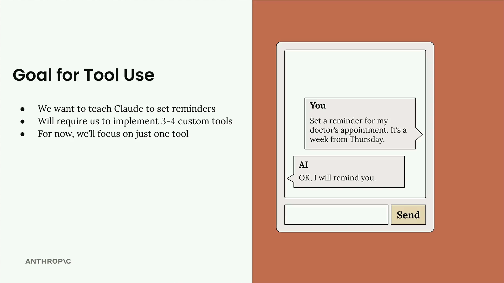
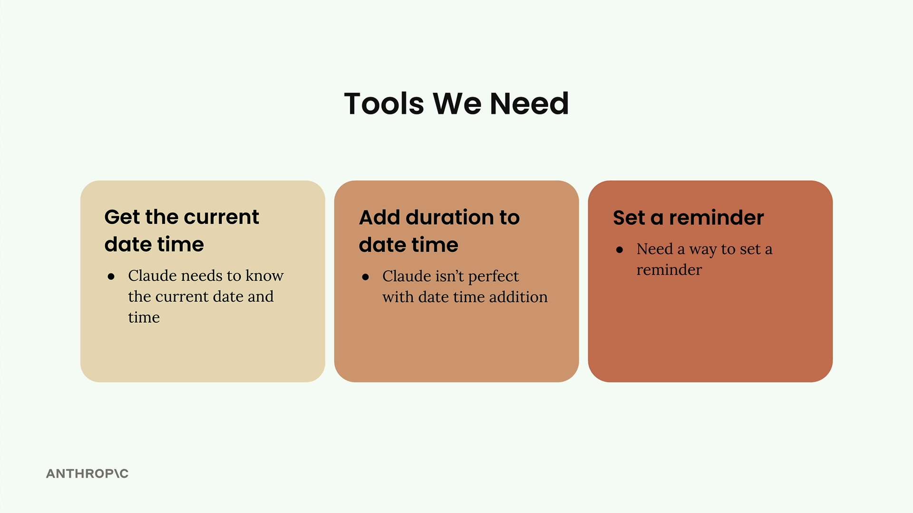

우리는 Claude가 미래 날짜에 대한 알림을 설정하는 방법을 배우는 실용적인 프로젝트를 만들 것입니다. 처음에는 간단하게 들릴 수 있지만, 커스텀 도구를 사용하여 해결할 몇 가지 흥미로운 과제들이 숨어 있습니다.

목표는 간단합니다: Claude에게 "다음 주 목요일에 병원 예약 알림을 설정해줘"라고 말하면 Claude가 "알겠습니다, 알려드리겠습니다."라고 응답하도록 만드는 것입니다. 하지만 이를 실현하려면 Claude가 시간과 알림을 처리하는 방식의 몇 가지 한계를 해결해야 합니다.
왜 어려운가
Claude가 현재 날짜를 알고 있긴 하지만, 해결해야 할 세 가지 구체적인 문제가 있습니다:
-
제한된 시간 인식: Claude는 현재 날짜는 알지만 정확한 시간은 모를 수 있습니다
-
날짜 계산 문제: Claude는 특히 며칠 후의 날짜를 계산할 때 시간 기반 덧셈을 항상 정확하게 처리하지 못합니다
-
알림 기능 없음: Claude는 알림을 설정하는 방법을 모릅니다 - 이를 위한 내장 메커니즘이 없습니다
이러한 각 한계는 Claude가 자연스럽게 할 수 있는 것과 우리의 알림 시스템에 필요한 것 사이의 격차를 나타냅니다. 도구는 이 격차를 메우는 방법입니다.
필요한 도구들

각 과제를 처리하기 위해 세 가지 별도의 도구를 만들 것입니다:
-
현재 날짜 및 시간 가져오기: Claude는 현재 날짜와 시간을 정확히 알아야 합니다
-
날짜 및 시간에 기간 더하기: Claude는 날짜 및 시간 덧셈이 완벽하지 않으므로 신뢰할 수 있는 도구를 제공할 것입니다
-
알림 설정하기: 시스템에서 실제로 알림을 설정하는 방법이 필요합니다
가장 간단한 것부터 시작하여 이 도구들을 하나씩 구현할 것입니다. 이 접근 방식을 통해 더 복잡한 기능을 구축하기 전에 도구 호출이 어떻게 작동하는지 이해할 수 있습니다. 마지막에는 Claude가 이 도구들을 결합하여 정확한 시간을 계산하고 알림을 설정함으로써 "일주일 후에 알려줘"와 같은 자연어 요청을 처리할 수 있게 됩니다.
이 프로젝트는 AI와 함께 작업하는 핵심 원칙을 보여줍니다: 모델에 한계가 있을 때, 프롬프트에서 그 한계를 우회하려 하는 대신 도구를 통해 기능을 확장합니다.